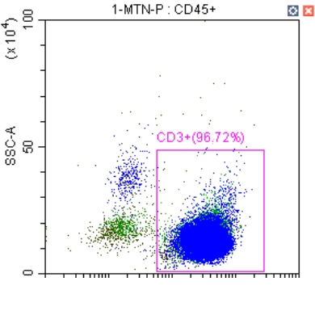
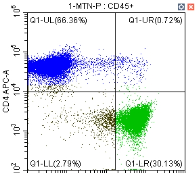
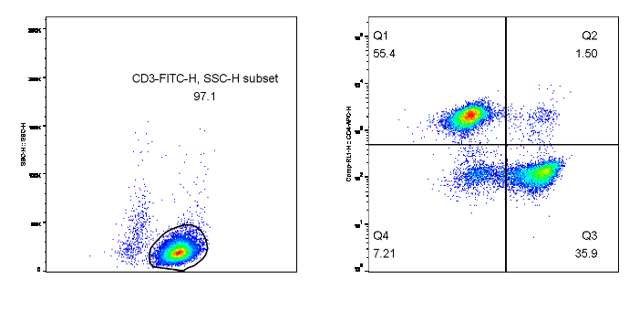
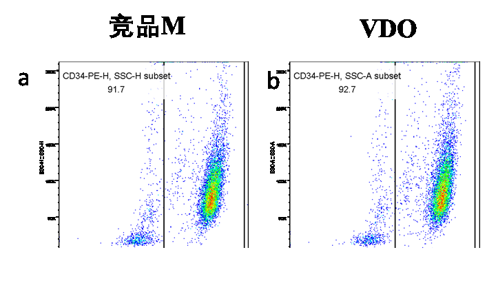
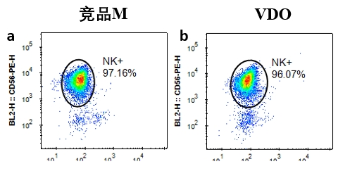

柱式细胞分选解决方案
该产品系列采用50-100nm的磁珠，表面偶联相应的抗体或蛋白，搭配细胞分选柱，可实现温和分选，分选后无需去除磁珠，不影响流式分析。磁珠采用生物可降解材料，生产过程采用了无菌控制，不影响下游培养，完美匹配科研和临床需求。
将分选抗体混合物加入到单细胞悬液中，孵育5分钟
将分选磁珠加入到细胞悬液中，无需孵育
将试管放置在磁极中孵育3分钟
将目标细胞倾倒至新的试管中即可
可提供50-100nm的CD4和CD8 T细胞分选磁珠。CD4、CD8联合分选可从单采血样本中获得高纯度、高回收率、高细胞活率的T细胞。

分选后CD3⁺纯度与竞品相当

与竞品无明显差异
| 指标 | 竞品M | 本产品 |
|---|---|---|
| 分选前CD3⁺占比 | 46.8% | 46.8% |
| 分选后CD3⁺纯度 | 94.7% | 96.7% |
| 分选后CD3⁺收率 | 89.4% | 90.0% |
| 分选后细胞活率 | 97.1% | 97.8% |
可提供50-100nm的CD3 T细胞分选磁珠，可从外周血单个核细胞（PBMC）等样本中获得高纯度、高回收率、高细胞活率的T细胞。

与竞品无明显差异
| 指标 | 竞品M | 本产品 |
|---|---|---|
| 分选前CD8⁺占比 | 17.8% | 17.8% |
| 分选后CD8⁺纯度 | 94.8% | 94.3% |
| 分选后CD8⁺收率 | 75.1% | 84.3% |
可提供50-100nm的NK细胞阴性分选试剂。NK细胞阴性分选试剂可从外周血单个核细胞（PBMC）等样本中获得高纯度、高回收率、高细胞活率的NK细胞。

与竞品无明显差异

与竞品无明显差异
| 指标 | 竞品M | 本产品 |
|---|---|---|
| NK⁺细胞分选 | ||
| 分选前NK⁺占比 | 6.0% | 6.0% |
| 分选后NK⁺纯度 | 97.2% | 96.1% |
| 分选后NK⁺收率 | 78.1% | 80.8% |
| CD34⁺细胞分选 | ||
| 分选前CD34⁺占比 | 6.9% | 6.9% |
| 分选后CD34⁺纯度 | 91.7% | 92.7% |
| 分选后CD34⁺收率 | 95.3% | 95.1% |
可提供50-100nm的CD34细胞分选磁珠，通过与造血干细胞（HSC）表面表达的CD34蛋白进行特异性结合，从而实现高纯度、高活性和高回收率的干细胞分离和富集。
| 产品名称 | 货号 | 处理细胞数 | 包装规格 |
|---|---|---|---|
| CD3分选磁珠（抗人） | XLB-CS-001 | 1×10⁸ total cells | 200μL |
| CD3分选磁珠（抗人） | XLB-CS-001 | 1×10⁹ total cells | 2mL |
| CD4分选磁珠（抗人） | XLB-CS-002 | 1×10⁸ total cells | 200μL |
| CD4分选磁珠（抗人） | XLB-CS-002 | 1×10⁹ total cells | 2mL |
| CD8分选磁珠（抗人） | XLB-CS-003 | 1×10⁸ total cells | 200μL |
| CD8分选磁珠（抗人） | XLB-CS-003 | 1×10⁹ total cells | 2mL |
| CD34分选磁珠（抗人） | XLB-CS-004 | 2×10⁸ total cells | 200μL |
| CD34分选磁珠（抗人） | XLB-CS-004 | 2×10⁹ total cells | 2mL |
| CD138分选磁珠（抗人） | XLB-CS-005 | 2×10⁸ total cells | 200μL |
| CD138分选磁珠（抗人） | XLB-CS-005 | 2×10⁹ total cells | 2mL |
南京新莱博生物技术有限公司
联系人：陈经理
电话：189-1260-8678
如需产品技术资料、报价或样品申请，欢迎联系我们！